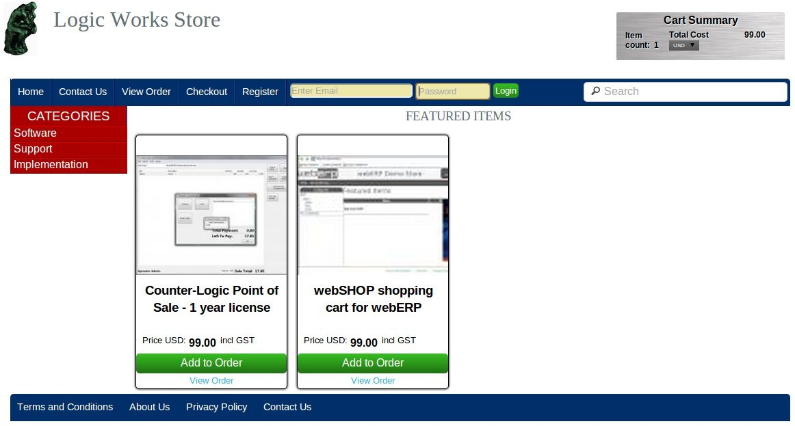
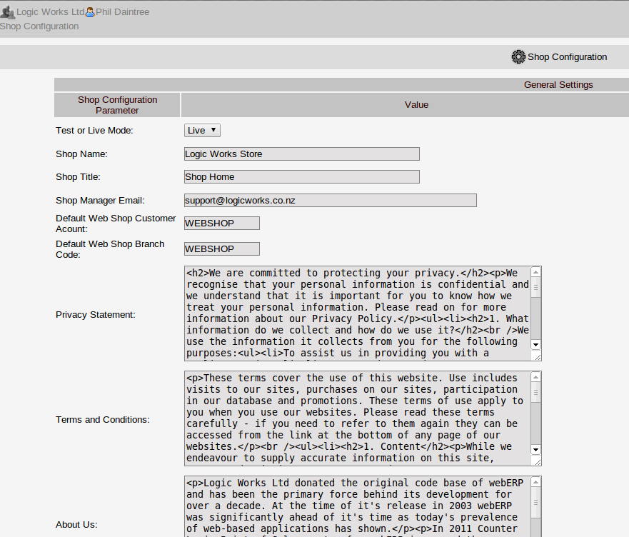
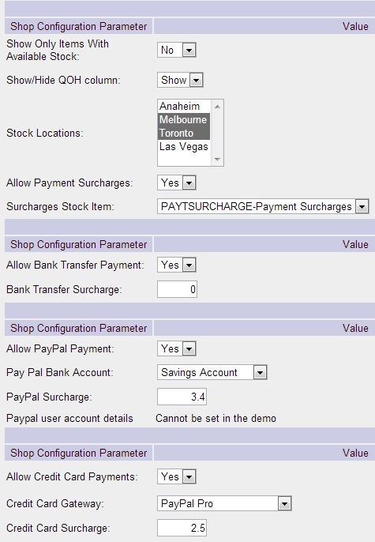

webSHOP webERP"s integrated shopping cart
Prerequisites
- 1. webERP 4.11 or greater installed on the same web-server
- 2. PHP 5.x SSL capable web-server with the following modules: curl, gettext (for multi-language), gd - which are required to run webERP in any event! Note that ssl (secure sockets layer is required to capture credit card details. This requires that the server have a ssl certificate installed - this is only for encryption and there is no requirement to have the certificate registered, but it is advisable to give users confidence in the authenticity of the site.
Extract the webSHOP.zip archive under your web-root. By default the URL will be http://yourdomain/webSHOP/ You can change the folder name to Store or something you prefer, or have a sub-domain point directly to this folder by configuring you web-hosting arrangements.
with a text editor open the file store/includes/config.php - this file contains the following:
<?php
$PathPrefix = "../webERP/"; //path to main webERP installation
$DatabaseName = "logicworks"; //the company database that will hold the data for the webSHOP
$Theme = "default"; //only have this theme currently
$GoogleAnalyticsID = "";//Need to register with google analytics to get this
$GoogleAnalyticsDomain = "yourdomain.com";
$StrictXHTML=False;
error_reporting (E_ALL & ~E_NOTICE);
$debug=0;
?>
$PathPrefix
The $PathPrefix must be set to the relative path from the store directory to the webERP installation directory on the web-server.
$DatabaseName
The $DatabaseName must be set to the company database that the store should use for all it's data. Note that the mysql user name and password are retrieved from the webERP configuration file and so they are not necessary here. As webERP is a multi-company application it is necessary for webSHOP to identify the company (database) for which the installation should work with.
$Theme
Currently there is only one css $Theme called "default" so this must be left as is as must the other variables unless debugging information is required at run-time when these options for error_reporting should be set as per the php documentation and the $debug variable set to 1. To create a new theme copy the default.css to say yourtheme.css make any modifications necessary and change the config.php file line for the theme variable to:
$Theme="yourtheme.css";
The store uses the data stored in the webERP config.php to obtain the mysql user and password to use in the connection to mysql.
Pointing a browser to:
http://yourdomain/store/
should now show the following

Now is the time to configure the webSHOP inside webERP as follows:
Configuring webSHOP inside webERP
Assuming the webERP installation is at:
http://yourdomain/webERP/
Login to webERP and go to webSHOP configuration:

Populate the fields as required.
Test Mode or Live
Set to Test mode until all the settings are completed. In test mode it is not possible to complete a live payment. The payment gateways with a test environment will direct the transaction to the sandbox/test environment.Shop Name
The name of the shop - this is displayed on the header of each page of the webSHOPShop Title
The title of the shop - is displayed on the tab of the browser to indicate what the browser tab containsShop Manager Email
The email address of the webSHOP manager. The webSHOP manager will receive an email advising new customers have registered and also the confirmation of orders placed.Default Web Shop Customer Acount:
The default webSHOP customer account must a valid webERP customer. The settings used in the webSHOP are all inherited from the settings of this customer. i.e. the prices displayed in the webSHOP are based on the sales type of this customer, the currency displayed, the language of the interface etc etc. Before a sale can actually be made the customer must register and create her own account, so this customer account will have no transactions against it. It's only purpose is to provide the necessary information to webSHOP for how the store should behave.Default Web Shop Branch Code:
The default webSHOP customer branch code should be a valid branch code of the customer selected above for the default webSHOP customer account. The same comments above apply. The defaults that are used include the default sales person, sales area. All new webSHOP customers will inherit these settings.Privacy Statement
The privacy statement entered here should be plain html text with no line breaks (they are ignored anyway). This html will form the page in webSHOP that displays to customers who may be concerned about the store's policy in relation to privacy and storage of personal information or credit card details. The store does not retain details of credit card as they are processed by the 3rd party payment gateway.Terms and Conditions
The Terms and conditions should be entered here using html (without line breaks). This html code forms the page displayed to customers when they click on the link to view their terms and conditions.About Us
The html text entered here is used to render the page displayed to customers when they click on the "About Us" page.Shop Name
The name of the shop - this is displayed on the header of each page of the webSHOP
Config Screen 2:

Show Only Items With Available Stock
This setting determines how webSHOP will display items where there is no stock. With this set to "No" all items that are defined in the webERP sales categories will display and if there is no stock currently they will display the stock quantity as "Arriving Soon". With this setting set to "Yes" then the item will not display at all. This is useful if the shop should only display items that are on hand currently.Shop/Hide Quantity on Hand Column
This setting allows the quantity on hand column to be hidden completely - where the store does not wish to display quantities on hand. By default if the quantity on hand is more than 20 then the quantity on hand displays as 20+ rather than displaying the actual quantity on hand.Stock Locations
This setting allows the store to display the total on hand accross a number of webERP locations. Where internal transfers or fulfillment of webSHOP orders could be done from a number of inventory locations. This is a multi-selection but at least one webERP inventory location should be selected.Allow Payment Surcharges
Increasingly the financial insitutions fees associated with payment make up a significant part of the cost of the transaction and customers should be allowed to choose how they wish to pay. webSHOP allows the cost of the payment processing method chosen to be included in the cost of the order. Some businesses may elect to absorb this cost and this feature can be turned off with this setting.Surcharges Stock Item
Where the payment surcharges option is used, this setting allows a webERP item code to be selected that will be used in the order to reflect the payment fee. This should be service item - with the general ledger posting set up to credit the bank charges - rather than sales. This is done using the inventory category of the item or the sales area of the webSHOP customer and the sales GL posting settings in webERP. Orders created in webERP then reflect the surcharges using this item and will appear on invoices to the customer using this item.
Payment Method Options
webSHOP can receive and process payments from customers using, PayPal or a number of credit card gateways. This is where the payment options presented to the customer are configured.
Allow Bank Transfers
If the webSHOP instance should allow bank transfers then this should be enabled here. Bank transfers incurr no cost to the store as the costs are all bourne by the customer. However, it is possible that the customer may not pay. For this reason orders created for customers that elect to pay by bank transfer are created only as quotations. When payment is received the receipt must be processed inside webERP as per any other customer receipt and the webSHOP created quotation must be changed to a sales order before it can be fulfilled.Bank Transfer Surcharge
Although the expectation is that no surcharge should apply to bank transfers it is still possible to add a transaction charge as a percentage of the amount collected.Allow Pay Pal Payment
If the webSHOP instance should allow payments to be made using PayPal Express then this should be enabled here. It is necessary of course to register a merchant account with PayPal and this incurrs costs as a percentage of the money collected - at the time of writing 3.4% plus a fixed transaction charge of NZD $0.45. The Pay Pal Bank Account
This allows selection of the webERP bank account that is used for recording transactions into your PayPal account. This bank account allows webERP reconciliation of transactions through your PayPal account.Pay Pal Commission Account
This allows selection of we webERP general ledger account that is used for recording the commission costs incurred on collections into your PayPal account. The integration automatically posts the commission to the general ledger.Pay Pal Surcharge
The surcharge that should apply to money collected via PayPal Express. The percentage entered here is extended by the amount of the sale and the amount calculated added to the amount to the payment due.Pay Pal User Password and Signature
The values for these fields are provided by your PayPal Express merchant account. The paypal User is the paypal user email address for the api - not the one you use to make payments but the one they give you when you register for paypal express checkout. See This video for setting up paypal express checkout. This will also explain the paypal signature - which is another level of security ... a second password effectively
Similar entries are available for PayPal Pro or Pay Flow Pro - PayPal Pro is only available in the US and Canada and PayFlow Pro is available through PayPal parnters world wide.
Populating the webSHOP
webSHOP is effectively part of webERP. To determine the items to display in the webSHOP the webERP sales categories need to be setup. These sales categories define the structure of the menu displayed in the webSHOP. The webERP sales categories allow for any depth of sales categories, with a top level and any number of sub-categories. Within each sales category it is possible to define any number of items. When these items display in webSHOP they do so with the pictures defined in webERP and using the pricing defined for the default webSHOP customer. If another customer logs into webSHOP - then prices will display in their currency and using their price list.